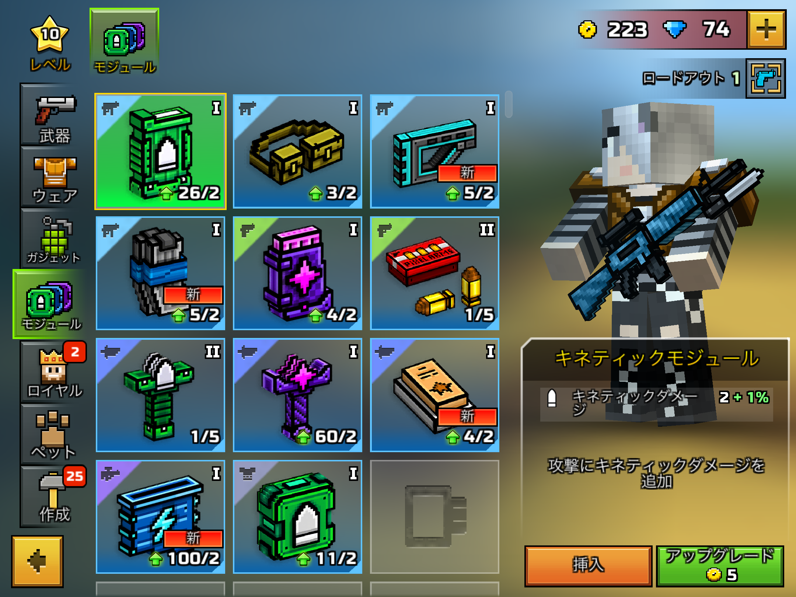

ピクセルガンとはどのようなゲームなのか。正直なところ課金ゲーといった感じです。しかし、
ピクセルガンにも課金をしなくても手に入れやすくそこそこ強い武器があります。今回はそのランキングです
その前にピクセルガンのしようとして武器レベル・プレイヤーレベルというものがあります。
この武器レベルとプレイヤーレベルが離れると武器の威力が下がったりします。
それにこのゲームには武器のレア度があります。
レア度によって武器の強化費が変わったりします。
このようにレアとミシカルでは倍以上の強化費の差が出てしまいます。
レア武器だと火力は低いが強化費が安い、ミシカルは強化費が高いが火力も高いといった感じです
なのでエピックくらいの武器をお勧めします強化費も火力も普通くらいです。
| プライマリ | 破壊者 | エピック |
| バックアップ | エクスターミネーター | レジェンド |
| 近接 | ダークフォースサーベル | レジェンド |
| 特殊 | 毒矢 | エピック |
| スナイパー | フォトンスナイパーライフル | レア |
| ヘビー | ロケットジャンパー | レア！現在兵器庫にはありません！ |
最初にも行ったようにエピックの武器をお勧めしていましたがレジェンドの武器が編成にありますが、
レジェンド以上の武器はプレイヤーとのレベル差が6以上離れてから許可することをお勧めします。
理由はレジェンドでなのでレベルが下がっても使えないことはない程度の火力があります。
しかも今となってはモジュールなどがあるのでレベルが下がっても補えます
ですがモジュールはクランに入らないと入手することができません。
活発的なくらんにはいることをおすすめします。
とまあこんな感じです、よかったらチャンネル登録と高評価よろしくお願いします
登録はこちらから